# For reproducibility
set.seed(050990)
# Simulate data
sample <- rnorm(n = 20, mean = 80, sd = 2)
# Calculate mean
mean(sample)[1] 79.913660HM350 Metascience
Eindhoven University of Technology
It combines effect sizes from multiple studies to calculate a single pooled effect size
It quantifies, for example, the effect of medication on systolic blood pressure, the prevalence of a disease, or the correlation between two variables, across a set of studies
It can only be applied to studies which report quantitative results
The goal is to estimate the true effect size (\(\theta\)) of an intervention/treatment
Individual studies provide estimates of the true effect size (\(\widehat{\theta}\))
Why does \(\widehat{\theta}\) differ from \(\theta\)?
\[ \theta = \widehat{\theta}_k + \epsilon_k \] where k refers to individual studies and \(\epsilon_k\) is the sampling error
Studies with larger sample sizes have smaller \(\epsilon\)
A common way to quantify \(\epsilon\) is through the standard error (SE) \[ SE = \frac{SD}{\sqrt{N}} \] where SD is the standard deviation and N is the study sample size
Study 2 has a larger sample size and therefore smaller SE
Studies with larger sample sizes tend to have smaller SE, which means \(\epsilon_k\) is reduced relative to studies with smaller sample sizes
All else equal, the estimated effect size \(\widehat{\theta}_k\) from a larger study is a more accurate estimate of the true effect \(\theta\) than the estimate from a smaller study
It weights effect sizes to assign greater influence to studies with smaller SE and therefore greater statistical precision
Statistical precision refers to how accurately a study estimates the true effect size
The larger the sample size of studies included in a meta-analysis (N) and the larger the number of studies (k), the greater the statistical precision of the meta-analysis
It assumes that one true effect size underlies all the studies in the meta-analysis, thus the term “Fixed Effect”
Any differences in observed effects are due to sampling error \[ \theta_k = \theta + \epsilon_k \]
where \(\theta_k\) is the study effect size, \(\theta\) is the true effect size and \(\epsilon_k\) is the study sampling error
A FE meta-analysis simply use a weighted average of all studies to calculate the pooled effect size
The weight of an individual study (\(w_k\)) is calculated as follows: \[ w_k = \frac{1}{SE^2_k} \] \[ \widehat{\theta} = \frac{\sum_{k=1}^{K}\widehat{\theta_k} w_k}{\sum_{k=1}^{K} w_k} \]
Multiply each study’s effect size \(\widehat{\theta}\) with its corresponding weight \(w_k\), sum the results across all studies k in our meta-analysis, and then divide by the sum of all the individual weights \(w_k\)
Unlike the FE meta-analysis, the RE meta-analysis has two sources of error: the sampling error (\(epsilon_k\)) and differences (heterogeneity) among studies (\(\zeta_k\))
Assumption of independent effect sizes
First level: \[ \widehat{\theta_k} = \theta_k + \epsilon_k \]
where \(\theta_k\) is the study effect size, \(\theta_k\) is the true effect size of one single study k and \(\epsilon_k\) is the study sampling error
Second level: \[ \theta_k = \mu + \zeta_k \]
where \(\theta_k\) is the study effect size, \(\mu\) is the true effect size and \(\zeta_k\) is the second source of error
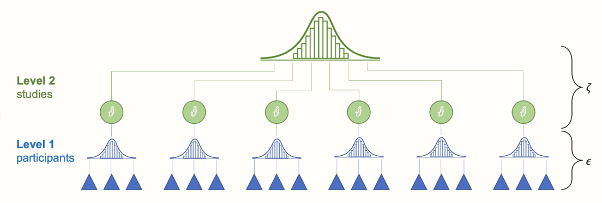
To calculate individual study weights \(w_k\) in the RE model we have to take the second source of error \(\zeta_k\) into account
To do this, we have to estimate the variance of the distribution of true effect sizes (\(\tau_2\))
The weight of an individual study (\(w_k\)) is calculated as follows: \[ w_k = \frac{1}{SE^2_K + \tau^2} \]
Just like with the FE model, the pooled effect size is calculated as follows: \[ \widehat{\theta} = \frac{\sum_{k=1}^{K}\widehat{\theta_k} w_k}{\sum_{k=1}^{K} w_k} \]
No assumption of independent effect size
Most common source of dependency: extracting more than one effect size per study
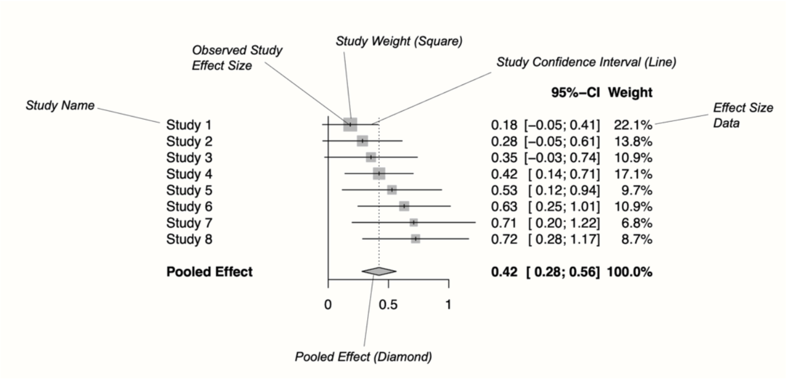
To synthesize results from a set of studies which, individually, may lack the statistical power to detect the effect
Reduce the uncertainty around the true effect size
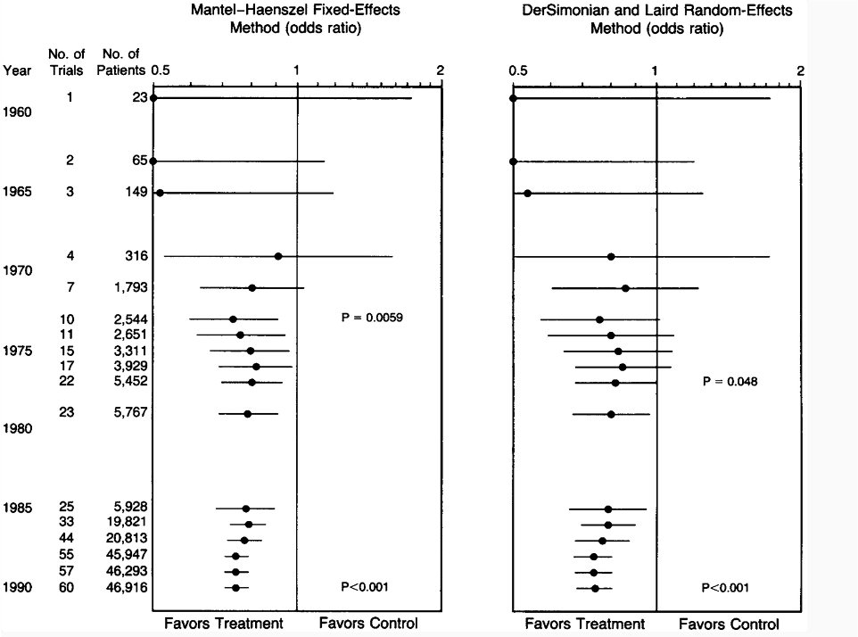
Effect sizes: standardized or non-standardized
Variance of the effect sizes
Formulas for effect sizes and variances depend on the type of effect size and the study design (e.g., within-subject design, between-subject, split-plot)
See Jané et al. (2023) for a guide to calculating effect and variances for different study designs
Standardized effect size (Cohen’s \(d_s\)): \[ d_s = \frac{ \bar{x}_1 - \bar{x}_2 }{SD} \]
Cohen’s \(d_s\) variance: \[ V_d = \frac{ n_1 + n_2 }{n_1n_2} + \frac{ d^2 }{2(n_1n_2)} \]
The ones that are central to the research question
The goal of a meta-analysis is to combine studies that are fairly “similar”.
Imagine the absurd scenario where a researcher decides to combine studies on the effect of yoga on stress levels and the effect of a medication on blood glucose in diabetic patients in one meta-analysis
How do we make sure we select similar studies?
The PICO framework is used to formulate a focused research question for a systematic review or meta-analysis.
It helps create a clear, answerable question by breaking it down into four key components
Population/Patient, Intervention, Comparison/Control, and Outcome.
Population: What kind of participants do studies have to include to be eligible for a meta-analysis?
Intervention: What kind of intervention do studies have to examine?
Comparator: What kind of control group do studies have to use? A control group receiving a placebo? Waitlists? Another intervention? Nothing at all?
Outcome: What kind of outcome do studies have to measure? Systolic blood pressure? Fat mass? \(VO_{2MAX}\)?
To synthesize results from a set of studies which, individually, may lack the statistical power to detect the effect
Reduce the uncertainty around the true effect size
To explain effect-size heterogeneity
The extent to which effect sizes vary within a meta-analysis. It is very important to assess heterogeneity in meta-analyses, as high heterogeneity could be caused by between-studies differences known as moderators.
Very high heterogeneity could even mean that the studies have nothing in common, and that there is no “real” true effect behind our data, due to mixing “apples and oranges”.
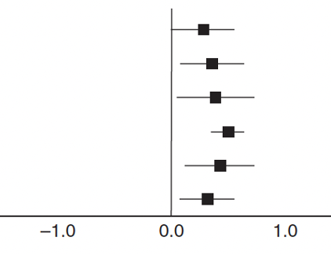
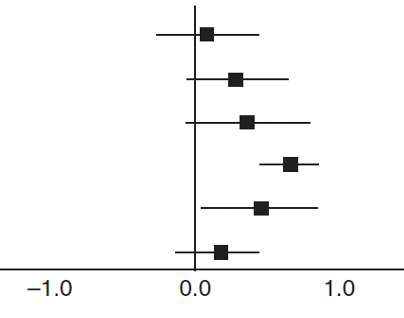
Cochran’s Q
Q is used to check if there is an excess of variation beyond it can be expected from sampling error alone
Q increases both when the number of studies k increases, and when the precision (the sample size N of a study).
Whether the Q-test is significant highly depends on the size of the meta-analysis and thus its statistical power.
\(I^2\)
\[ I^2 = \frac{Q - (K - 1)}{Q} \]
It is insensitive to the number of studies
If studies become increasingly large, the sampling error tends to zero, while at the same time, \(I^2\) tends to 100% simply because the studies have a greater sample size.
Heterogeneity variance (\(\tau^2\)) & Standard deviation (\(\tau\))
Taking the square root of \(\tau^2\) results in \(\tau\), which is the standard deviation of the true effect sizes
\(\tau\) is is expressed on the same scale as the effect size metric
It is insensitive to the number of studies and sample size of studies.
It is hard to interpret. How do we interpret if \(\tau_2\) = 0.1 is observed?
Prediction Interval (PI)
PI represents a range into which the effects of future studies can be expected to fall based on current evidence
For example, if the PI only include positive numbers it means that, despite varying effects, the intervention is expected to be beneficial in future studies
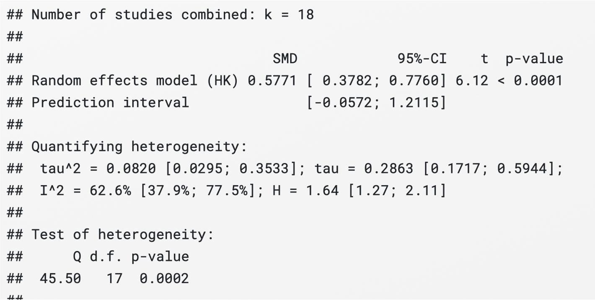
Conduct a moderator analysis:
Conducting a subgroup analysis/meta-regression requires additional information. Examples of moderators:
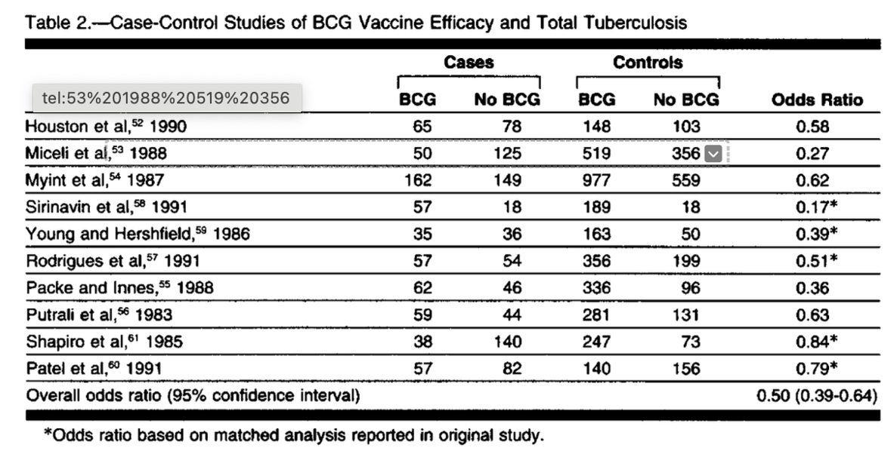
Colditz et al (1992) performed a moderator analysis to investigate sources of heterogeneity
The found that the efficacy of BCG vaccination depended on the latitude. That is, it increased with increasing distance from the equator
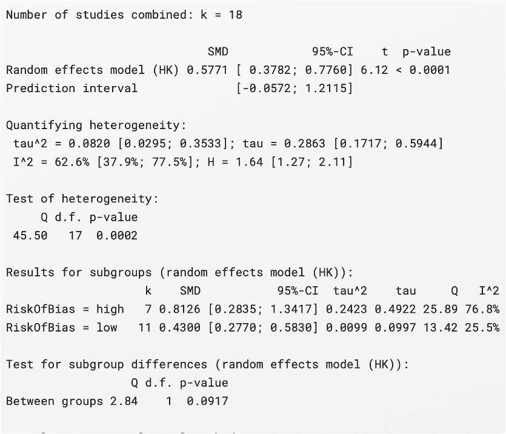
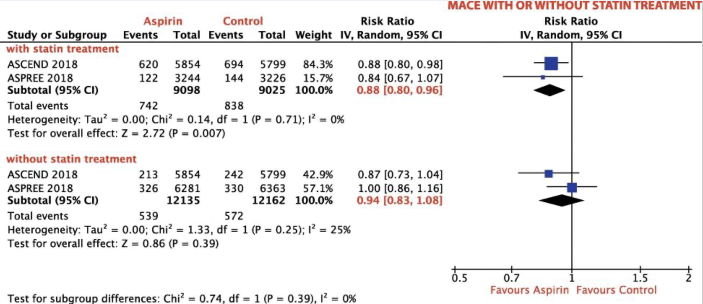
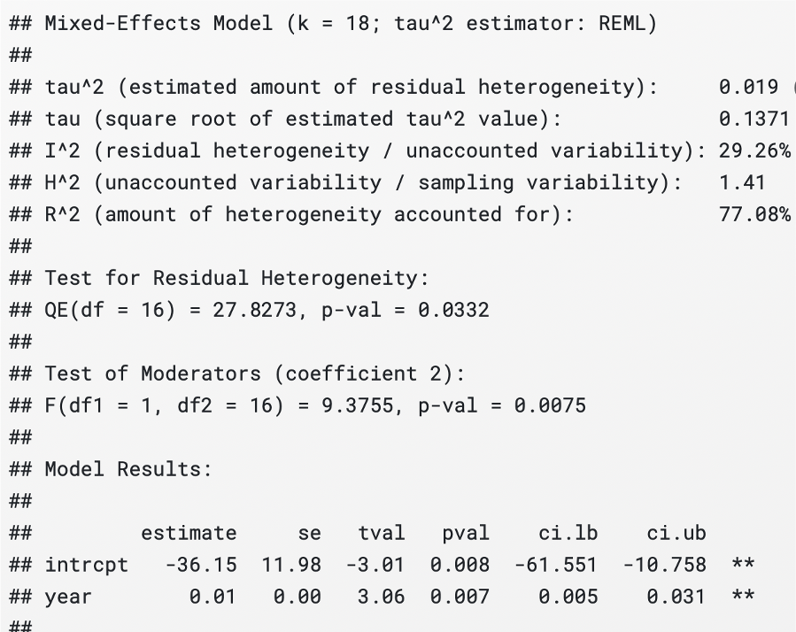
Do not mindlessly conduct moderator analyses as this increases the the type I error rate
Moderator analyses should be based on theoretical grounds
Violating the assumption of independence
Ignoring outliers
If one or more studies contribute more than one effect size then a multi-level meta-analysis is required
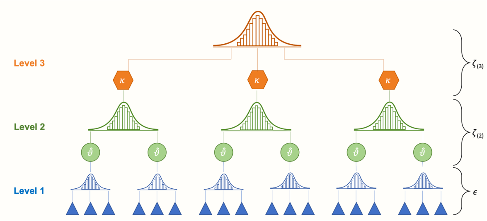
Measurement error
Typing error
Using the Standard Error of Measurement (SEM) instead of SD
Correct ES calculation \[ d_s = \frac{\bar{x}_1 - \bar{x}_2}{SD} = \frac{14.4 - 13.8}{1.3} = 0.23 \]
Incorrect ES calculation \[ SEM = \frac{SD}{\sqrt{N}} \]
\[ d_s = \frac{14.4 - 13.8}{SEM} = \frac{14.4 - 13.8}{1.3 /\sqrt{40}} = 2.68 \]
:::  :::
:::
The process of reusing the same analysis using the same data and obtaining the same results
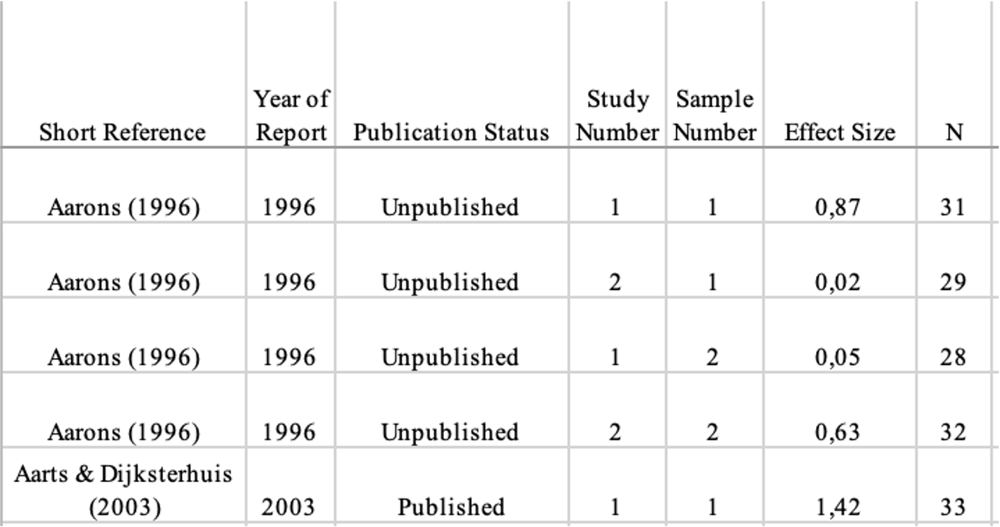
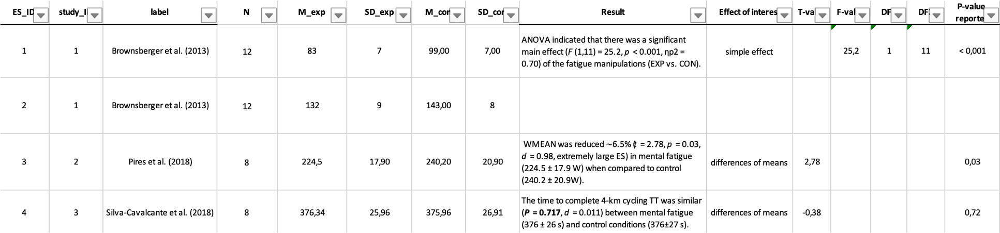
“Reproducibility rate rose by almost 40% when the analysis code was provided” (Laurinavichyute, Yadav, and Vasishth 2022)